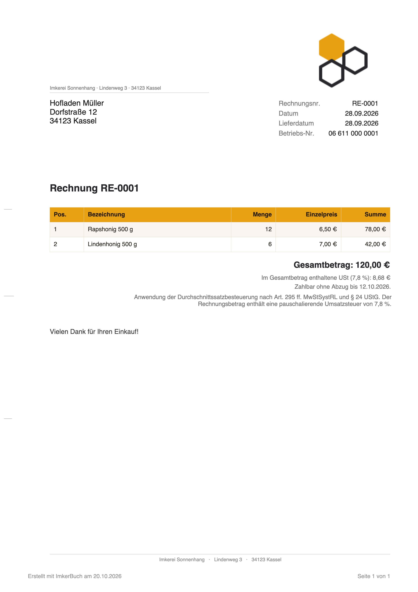
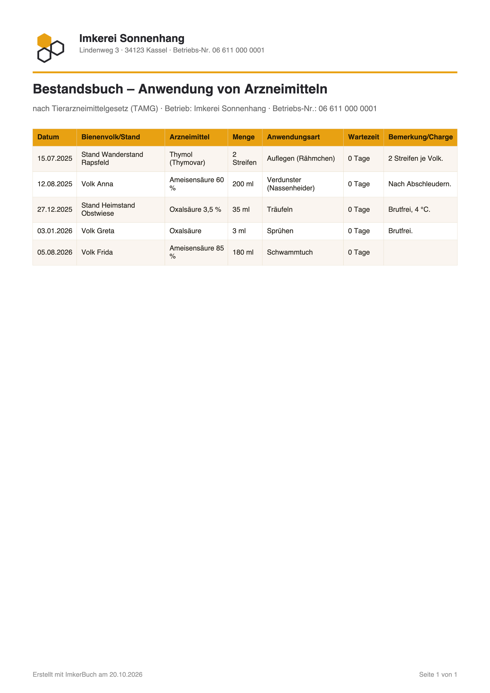

Durchsicht
am Stand.
Eine Frage pro Bildschirm,
große Knöpfe – auch mit Handschuhen.
%STATUS%

4gut

Vom Honigraum
bis zur Rechnung.
Ernte, Charge mit Losnummer, Verkauf
und Kassenbuch – alles verbunden.
%STATUS%


€Rechnung als PDF
Bestandsbuch
fertig als PDF.
Für Veterinäramt und Bio-Kontrolle –
mit einem Tipp.
%STATUS%


Nach TAMGmit Wartezeiten
Bio-UnterlagenÖko-Kontrolle